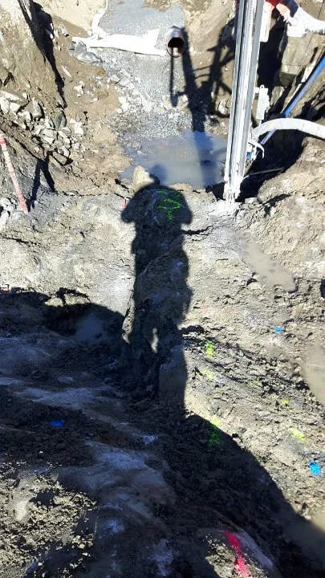

När en salva inte är ett alternativ
Hydraulspräckning, även kallat bergspräckning eller stenspräckning, är ett skonsamt sätt att ta bort berg och sten. Det blir ingen knall, ingen kastrisk och bara små vibrationer, och därför passar metoden där sprängning är olämplig eller för riskabel.
Vi har både sprängning och spräckning i samma lag. Därför väljer vi metod efter platsen, inte efter vad vi råkar ha med oss, och kan kombinera dem på samma jobb.
- Nära husInpå grunden och husknuten
- LedningarIntill vatten, avlopp, el och fiber
- Tät bebyggelseDär grannar bor och arbetar kvar
- Känsliga miljöerDär vibrationer måste hållas nere
- Mindre bergpartierHällar, knölar och berg i tomten
- Stora stenblockSten som måste delas för att kunna flyttas
Så går en spräckning till
Plan
Vi ser på berget och omgivningen och bestämmer var och hur berget ska spräckas.
Borr
Hålen borras med borrvagn eller handhållen borr, beroende på hur nära och trångt det är.
Spräckning
Spräckaren förs in i hålen och pressar isär berget hydrauliskt tills det spricker, bit för bit. Darda C12 i trånga lägen, Hirado på grävmaskinen för större block.
Färdig yta
Med grävmaskin, hjullastare och lastbil tar vi bort berget och lämnar ytan klar.


Spräckning eller sprängning?
Sprängning är snabbast när det är mycket berg som ska bort. Spräckning tar längre tid per kubikmeter, men är rätt val när omgivningen kräver det. Ofta blir det bäst att kombinera: vi spränger där det går och spräcker närmast det som ska skyddas.
Spräckning med tre generationers erfarenhet
AP Sprängtjänst är ett familjeföretag i tredje generationen med egen maskinpark, i berget sedan 1997. Eftersom vi både spränger och spräcker väljer vi metod efter platsen, och kan gå nära där andra säger nej, till exempel under hus där människor bor kvar.
| Hydraulspräckning | Sprängning | |
|---|---|---|
| Knall | Ingen | Ja, en kort smäll |
| Vibrationer | Små | Större, beräknas i sprängplanen |
| Kastrisk | Ingen | Hanteras med sprängmattor |
| Tid | Längre tid per kubikmeter | Snabbast vid stora volymer |
| Tillstånd | I regel inget sprängtillstånd | Tillstånd från Polisen |
| Passar bäst | Nära hus och ledningar, mindre bergpartier, stora stenblock | Större bergvolymer, husgrunder, vägar och schakt |
Hydraulspräckning där du bygger
Vi har många uppdrag i Stockholm, Uppsala, Västerås och Enköping, men tar uppdrag i hela Sverige. Maskiner och utrustning kommer fram till rätt plats i rätt tid, så att jobbet kan börja när det ska.
Vanliga frågor
Vad är hydraulspräckning?
Vi borrar hål i berget och för in en hydraulisk kil. Kilen pressar isär berget inifrån tills det spricker. Inget sprängämne används, så det blir varken knall, kastrisk eller stora vibrationer.
När väljer man spräckning i stället för sprängning?
När sprängning inte är lämplig: nära känsliga byggnader och ledningar, i tät bebyggelse eller när vibrationer måste hållas nere. Spräckning passar bäst för mindre bergvolymer.
Behövs tillstånd för hydraulspräckning?
Eftersom inget sprängämne används behövs i regel inget tillstånd för sprängning. Vi går igenom vad som gäller för just ditt jobb.
Kan ni kombinera spräckning och sprängning?
Ja. På samma jobb kan vi spränga där det går och spräcka närmast huset eller ledningarna. Vi väljer metod efter platsen.
Darda eller Hirado – vad är skillnaden?
Båda spräcker berget hydrauliskt, utan sprängämne. Darda C12 är handhållen och används där det är trångt, till exempel inpå husknuten eller nere i en grop. Hirado sitter på grävmaskinen och tar större block och mer berg på kortare tid.
Kan ni spräcka stora stenblock?
Ja. Stora stenblock som måste delas för att kunna flyttas spräcker vi med Hirado på grävmaskinen, eller med Darda C12 där maskinen inte kommer fram. Sedan lastar vi och kör bort stenen.
Var utför ni hydraulspräckning?
Vi har många uppdrag i Stockholm, Uppsala, Västerås och Enköping, men tar uppdrag i hela Sverige.
Vad behöver ni veta för att ge en offert?
Var jobbet ligger, vad som ska göras och ungefär hur mycket berg det gäller. Bilder på berget eller tomten hjälper mycket. Skicka en förfrågan eller mejla info@ap-sprangtjanst.se, så ringer vi upp inom en arbetsdag.
Fler tjänster
Rätt metod från start.
Ring Anders
070-343 17 70Vi ringer upp inom en arbetsdag. Har du bilder på berget eller tomten? Mejla dem gärna till info@ap-sprangtjanst.se, så går det snabbare att ge pris.